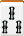
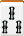
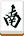
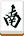
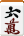
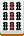
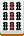

這裡將說明日本麻將中常見的役種，日本麻將需要有一飜以上的役才可以和牌。
日本麻將中役只有一飜役、二飜役、三飜役、六飜役及役滿役五種，而三飜役只有三種，六飜役只有一種。
有部分役種若非門前清，其飜數會少一飜，甚至該役種不成立。
一飜役
立直
門清聽牌時可以宣告立直，並支付1000點點棒置於場上。此時無論如何都可以和牌(至少有「立直」一飜)，並且和牌時可以翻開裏寶牌。
一發
立直的情況下，在一巡以內和牌，期間不能有人吃、碰、大明槓。因為需要立直，所以必定門前清。
門前清自摸和
僅靠自摸和牌。門前清限定。
平和
僅由順子及沒有符數的雀頭(數牌、客風牌)所組成，且聽牌形式為雙面聽的牌型，意即沒有額外的符數(門前加符除外)。門前清限定。


 和
和
斷么九
牌型沒有任何么九牌(一、九及字牌)的牌型。基本上不需門前清，但部分規則需要門前清。


 和
和

一盃口
牌型中有兩組相同的順子。門前清限定。


 和
和
役牌
牌型中有一組場風、自風或三元牌的刻子，每有一組加一飜。
 
和

和


寶牌
牌型中每有一張寶牌加一飜，而且可以疊加。
注意：寶牌只能增加飜數，不能作為起和番數，因為它不是役。
嶺上開花
暗槓、大明槓或加槓後，摸到嶺上牌立即自摸和牌。
搶槓
加槓時，若加槓的那張牌是對手聽的牌，則對手可以喊榮，同時得到「搶槓」一飜。
海底撈月
摸到最後一張牌(海底牌)而自摸。
河底撈魚
摸到最後一張牌(海底牌)沒有自摸，而丟牌時卻放銃(縱使不是那張海底牌)，則對手得到「河底撈魚」一飜。
二飜役
三色同順
牌型中有三組相同數列，但花色不同的順子。非門清降一飜。
 和
和


一氣通貫
牌型中有同花色的123、456及789三副順子。非門清降一飜。
 和
和


混全帶么九
所有的面子及雀頭，都至少含有一張么九牌(一、九及字牌)。非門清降一飜。
 和

和

七對子
由七個對子所組成的牌型，為非四面子一雀頭的形式，符數固定為25符。因為只有對子，所以必定門前清。

 和
和
對對和
僅由刻子或槓子，及一組雀頭所組成的牌型。
和


三暗刻
牌型中有三組暗刻或暗槓。因為是三個暗刻，所以頂多鳴一次牌。
自摸


三槓子
牌型中有三組以上的槓子。
和

 

三色同刻
牌型中有三組相同數字，但花色不同的刻子或槓子。
和
混老頭
僅由么九牌(一、九及字牌)的刻子或槓子所組成的牌型。
 和
和

小三元
由其中兩種三元牌為刻子或槓子，另外一種三元牌為雀頭所組成的牌型。

 和
和
雙立直
第一巡摸打時即宣告立直，在此之前不能有人吃、碰、大明槓。性質與立直相同，但額外多一飜。
三飜役
混一色
只使用一種花色的數牌(萬、筒、索)以及字牌所組成的牌型。非門清降一飜。
和
純全帶么九
所有的面子及雀頭，都至少含有一張么九牌，且不能有字牌。非門清降一飜。
和

二盃口
牌型中有兩副兩組相同的順子，亦即兩副一盃口。門前清限定。
和
六飜役
清一色
只使用一種花色的數牌(萬、筒、索)所組成的牌型。非門清降一飜。
和